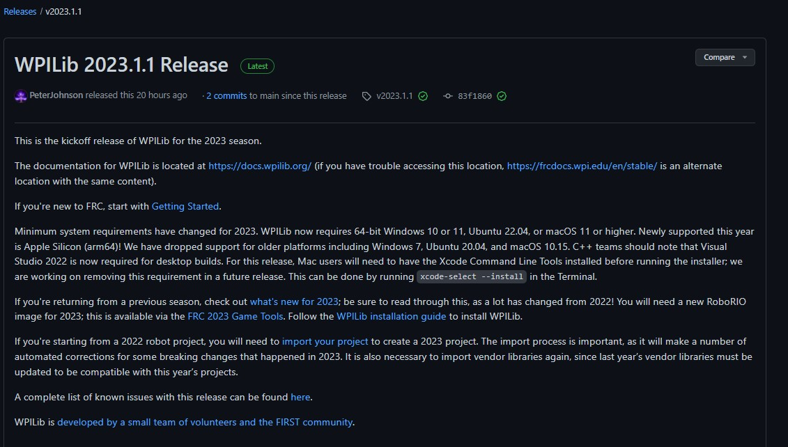
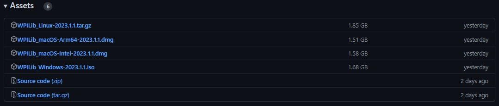
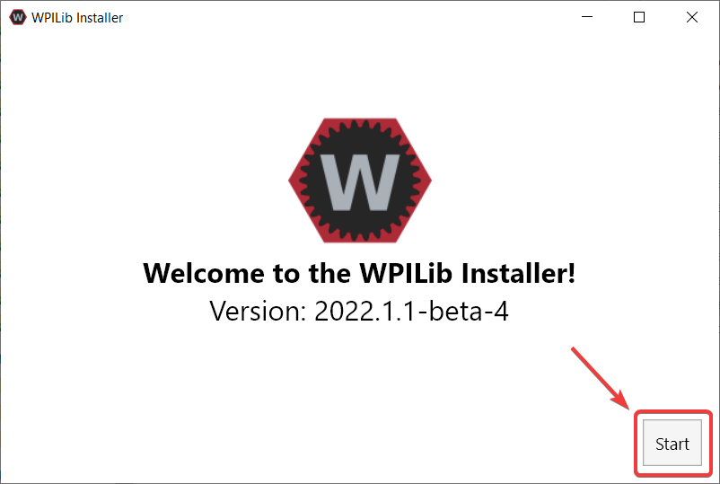
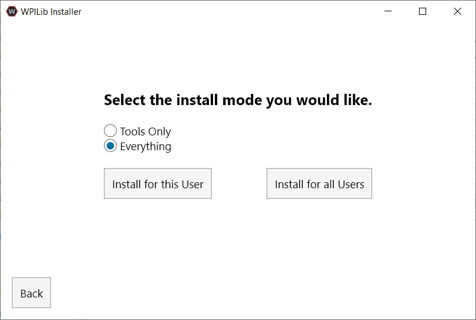
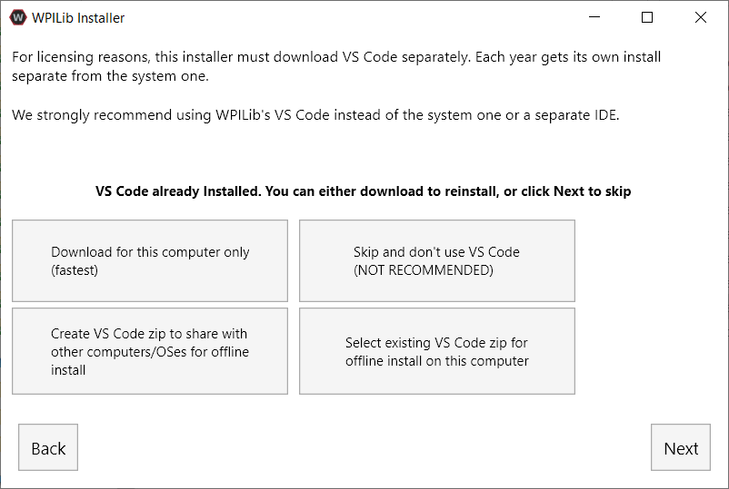
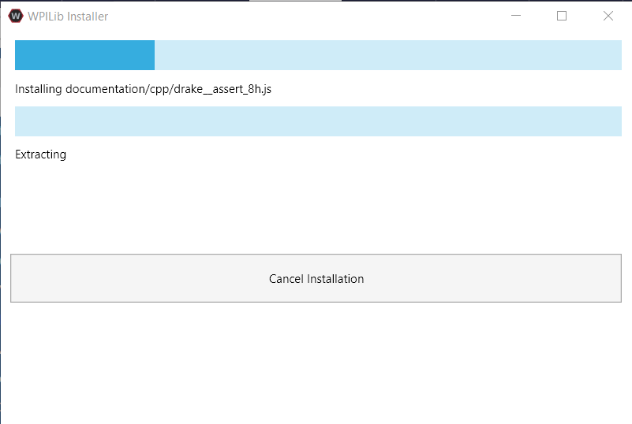
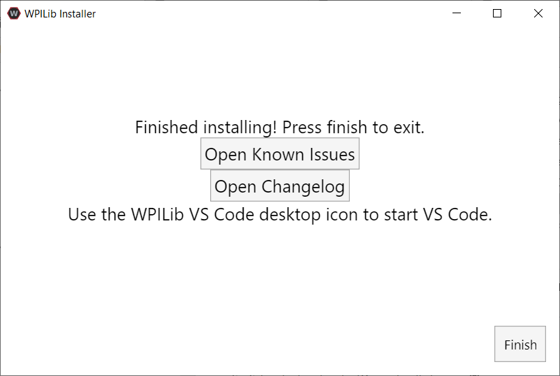
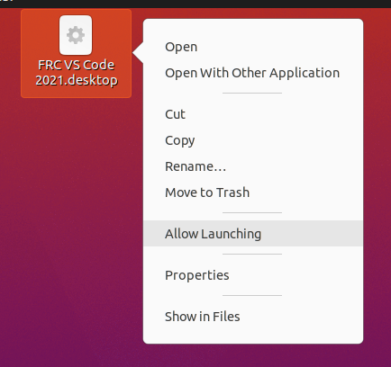
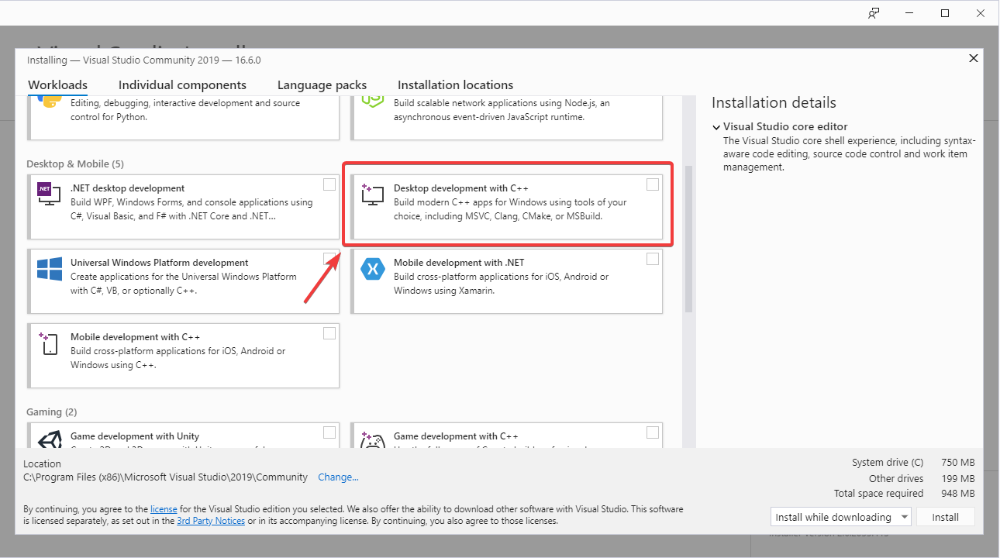

WPILib Installation Guide
This guide is intended for Java and C++ teams. LabVIEW teams can skip to Installing LabVIEW for FRC (LabVIEW only). Additionally, the below tutorial shows Windows 10, but the steps are identical for all operating systems. Notes differentiating operating systems will be shown.
Prerequisites
- Supported Operating Systems and Architectures:
Windows 10 & 11, 64 bit only. 32 bit and Arm are not supported
Ubuntu 22.04, 64 bit. Other Linux distributions with glibc >= 2.34 may work, but are unsupported
macOS 11 or higher, both Intel and Arm.
Warning
The following OSes are no longer supported: macOS 10.15, Ubuntu 18.04 & 20.04, Windows 7, Windows 8.1, and any 32-bit Windows.
WPILib is designed to install to different folders for different years, so that it is not necessary to uninstall a previous version before installing this year’s WPILib.
Downloading
WPILib Installer
Release Notes
This is an update release of WPILib for the 2023 season. Notable fixes in this release: - Several major NetworkTables bugs - ADXRS450 Gyros in C++
Significant new features in this release: - SysId CTRE CANivore and Phoenix Pro support
Upgrading from earlier 2023 releases is easy: simply download and run the new installer and it will update your current installation. If you already have the 2023 WPILib vscode installed, it will detect it and you can simply click "next" for that installation step. After installation, vscode will prompt you when opening your robot project whether you want to upgrade it to this version. Note that using the installer is required to get the new version of desktop tools such as Shuffleboard.
The documentation for WPILib is located at https://docs.wpilib.org/ (if you have trouble accessing this location, https://frcdocs.wpi.edu/en/stable/ is an alternate location with the same content).
If you're new to FRC, start with Getting Started.
Minimum system requirements have changed for 2023. WPILib requires 64-bit Windows 10 or 11, Ubuntu 22.04, or macOS 11 or higher. Newly supported this year is Apple Silicon (arm64)! C++ teams should note that Visual Studio 2022 is now required for desktop builds. For this release, Mac users will need to have the Xcode Command Line Tools installed before running the installer; we are working on removing this requirement in a future release. This can be done by running xcode-select --install in the Terminal.
If you're returning from a previous season, check out what's new for 2023; be sure to read through this, as a lot has changed from 2022! You will need a new RoboRIO image for 2023; this is available via the FRC 2023 Game Tools. Follow the WPILib installation guide to install WPILib.
If you're starting from a 2022 robot project, you will need to import your project to create a 2023 project. The import process is important, as it will make a number of automated corrections for some breaking changes that happened in 2023. It is also necessary to import vendor libraries again, since last year’s vendor libraries must be updated to be compatible with this year’s projects.
A complete list of known issues with this release can be found here.
WPILib is developed by a small team of volunteers and the FIRST community.
What's Changed since 2023.3.1
- [wpilib] Revert throw on nonexistent SimDevice name in SimDeviceSim by @PeterJohnson in https://github.com/wpilibsuite/allwpilib/pull/5053
- [cameraserver] Add GetInstance() to all functions by @PeterJohnson in https://github.com/wpilibsuite/allwpilib/pull/5054
- [ntcore] Handle excludeSelf on SetDefault by @PeterJohnson in https://github.com/wpilibsuite/allwpilib/pull/5058
- [ntcore] Output warning on property set on unpublished topic by @PeterJohnson in https://github.com/wpilibsuite/allwpilib/pull/5059
- [wpilib] ElevatorSim: Fix WouldHitLimit methods by @hadley31 in https://github.com/wpilibsuite/allwpilib/pull/5057
- [wpimath] Fix DCMotor.getSpeed() by @calcmogul in https://github.com/wpilibsuite/allwpilib/pull/5061
- [sysid] Make Spark Max built-in encoder sampling and measurement period configurable by @calcmogul in https://github.com/wpilibsuite/sysid/pull/478
- [sysid] Use "encoder port" instead of "built-in" for spark max built-in encoder by @calcmogul in https://github.com/wpilibsuite/sysid/pull/480
What's Changed since 2022.2.1
WPILib
- Load joystick values upon code initialization by @ThadHouse in https://github.com/wpilibsuite/allwpilib/pull/4950
- AprilTagFieldLayout: Improve API shape for loading builtin JSONs by @brennenputh in https://github.com/wpilibsuite/allwpilib/pull/4949
- Fix C++ ADXRS450 and Java SPI gyro defs by @ThadHouse in https://github.com/wpilibsuite/allwpilib/pull/4988
- Properly use control word that is in sync with DS data by @ThadHouse in https://github.com/wpilibsuite/allwpilib/pull/4989
- Add Timer::Restart() by @srimanachanta in https://github.com/wpilibsuite/allwpilib/pull/4963
NetworkTables
- Write empty persistent file if none found by @PeterJohnson in https://github.com/wpilibsuite/allwpilib/pull/4996
- Handle topicsonly followed by value subscribe by @PeterJohnson in https://github.com/wpilibsuite/allwpilib/pull/4991
- Special-case default timestamps by @PeterJohnson in https://github.com/wpilibsuite/allwpilib/pull/5003
- Use full handle when subscribing by @PeterJohnson in https://github.com/wpilibsuite/allwpilib/pull/5013
- Add client disconnect function by @PeterJohnson in https://github.com/wpilibsuite/allwpilib/pull/5022
- Don't leak buffers in rare WS shutdown case by @PeterJohnson in https://github.com/wpilibsuite/allwpilib/pull/5046
- Change wire timeout to fixed 1 second by @PeterJohnson in https://github.com/wpilibsuite/allwpilib/pull/5048
- Report better connection close messages by @PeterJohnson in https://github.com/wpilibsuite/allwpilib/pull/5047
Simulation
- Fix MOI calculation error in SingleJointedArmSim by @mcm001 in https://github.com/wpilibsuite/allwpilib/pull/4968
- Enable docking in the GUI by @PeterJohnson in https://github.com/wpilibsuite/allwpilib/pull/4960
- GUI: Fix buffer overflow in joystick axes copy by @PeterJohnson in https://github.com/wpilibsuite/allwpilib/pull/5036
- Check for null in getSimDeviceName JNI by @PeterJohnson in https://github.com/wpilibsuite/allwpilib/pull/5038
Math
- HolonomicDriveController: Add getters for the controllers by @OliverW10 in https://github.com/wpilibsuite/allwpilib/pull/4948
- Fix Pose3d exponential and clean up Pose3d logarithm by @jlmcmchl in https://github.com/wpilibsuite/allwpilib/pull/4970
- Workaround intellisense Eigen issue by @PeterJohnson in https://github.com/wpilibsuite/allwpilib/pull/4992
- Remove extraneous assignments from DiscretizeAB() by @calcmogul in https://github.com/wpilibsuite/allwpilib/pull/4967
- Make PIDController::Calculate(double, double) update setpoint flag by @calcmogul in https://github.com/wpilibsuite/allwpilib/pull/5021
- Add nearest to Pose2d and Translation2d by @rzblue in https://github.com/wpilibsuite/allwpilib/pull/4882
- Discard stale pose estimates by @jlmcmchl in https://github.com/wpilibsuite/allwpilib/pull/5045
Examples
- Add Computer Vision Pose Estimation and Latency Compensation Example by @CarloWoolsey in https://github.com/wpilibsuite/allwpilib/pull/4901
- Add comment to drivedistanceoffboard example by @BerkeSinanYetkin in https://github.com/wpilibsuite/allwpilib/pull/4877
- Fix swapped arguments in MecanumControllerCommand example by @sciencewhiz in https://github.com/wpilibsuite/allwpilib/pull/4976
- Update for AprilTag field load API usage by @calcmogul in https://github.com/wpilibsuite/allwpilib/pull/4975
- C++ RamseteCommand: Fix units by @Starlight220 in https://github.com/wpilibsuite/allwpilib/pull/4954
- Hatchbots: Add telemetry by @Starlight220 in https://github.com/wpilibsuite/allwpilib/pull/5011
- Improvements to Elevator Simulation Example by @michaelleong25 in https://github.com/wpilibsuite/allwpilib/pull/4937
Command-Based Framework
- Fix C++ Select() factory by @Starlight220 in https://github.com/wpilibsuite/allwpilib/pull/5024
DataLogTool
- Fix crash due to MemoryBuffer by @PeterJohnson in https://github.com/wpilibsuite/allwpilib/pull/5017
- Add msgpack to datalog example by @truher in https://github.com/wpilibsuite/allwpilib/pull/5032
Glass
- Add option for debug-level NT logging by @PeterJohnson in https://github.com/wpilibsuite/allwpilib/pull/5007
- Limit frame rate to 120 fps by default by @PeterJohnson in https://github.com/wpilibsuite/allwpilib/pull/5030
Shuffleboard
- Format integer arrays correctly by @fovea1959 in https://github.com/wpilibsuite/shuffleboard/pull/750
- Support numbers in gyro widgets by @SamCarlberg in https://github.com/wpilibsuite/shuffleboard/pull/754
- Add all known topics on networktables client connect by @lost1227 in https://github.com/wpilibsuite/shuffleboard/pull/753
- Use NetworkTable disconnect instead of stop by @PeterJohnson in https://github.com/wpilibsuite/shuffleboard/pull/755
SysId
- Upgrade vendordeps by @calcmogul in https://github.com/wpilibsuite/sysid/pull/472
- Add CTRE CANivore and Phoenix Pro support by @TytanRock in https://github.com/wpilibsuite/sysid/pull/455
GradleRIO
- Rename Sim DriverStation to be clearer about its purpose by @PeterJohnson in https://github.com/wpilibsuite/GradleRIO/pull/644
VSCode
- Add replacements for wpi/numbers and wpi/span by @sciencewhiz in https://github.com/wpilibsuite/vscode-wpilib/pull/581
- Change WPILib on status bar to open project information by @ThadHouse in https://github.com/wpilibsuite/vscode-wpilib/pull/577
- Re-enable standalone utility notarization by @sciencewhiz in https://github.com/wpilibsuite/vscode-wpilib/pull/572
- Update vscode-java to 1.14.0 by @PeterJohnson in https://github.com/wpilibsuite/WPILibInstaller-Avalonia/pull/329
Docs
- [wpimath] Fix typo in Pose3d::Exp() docs by @calcmogul in https://github.com/wpilibsuite/allwpilib/pull/4966
- [wpimath] Update Wikipedia links for quaternion to Euler angle conversion by @calcmogul in https://github.com/wpilibsuite/allwpilib/pull/4995
- [wpilibj] Fix typo in MecanumDrive docs by @calcmogul in https://github.com/wpilibsuite/allwpilib/pull/4969
- [commands] Fix docs inconsistency for toggleOnFalse(Command) by @Nyxiad in https://github.com/wpilibsuite/allwpilib/pull/4978
- [wpilib] XboxController: Fix docs discrepancy by @BruceMcRooster in https://github.com/wpilibsuite/allwpilib/pull/4993
- Clarify DS functions provided by FMS by @sciencewhiz in https://github.com/wpilibsuite/allwpilib/pull/5043
New Contributors
- @BerkeSinanYetkin made their first contribution in https://github.com/wpilibsuite/allwpilib/pull/4877
- @Nyxiad made their first contribution in https://github.com/wpilibsuite/allwpilib/pull/4978
- @BruceMcRooster made their first contribution in https://github.com/wpilibsuite/allwpilib/pull/4993
- @fovea1959 made their first contribution in https://github.com/wpilibsuite/shuffleboard/pull/750
- @lost1227 made their first contribution in https://github.com/wpilibsuite/shuffleboard/pull/753
- @hadley31 made their first contribution in https://github.com/wpilibsuite/allwpilib/pull/5057
MD5 Hashes
3fadb13303671dcef56f9452e53ffe7a WPILib_Linux-2023.3.2.tar.gz
9bdb25c067769643e78751b3711cc228 WPILib_Windows-2023.3.2.iso
5c8af2f07b06a5d076b0233f4a771b67 WPILib_macOS-Intel-2023.3.2.dmg
d86778ed8497e91010f2b5a206eacda4 WPILib_macOS-Arm64-2023.3.2.dmg
SHA256 Hashes
39fe2164cc115f77fd1b53ea782d8b07f40290eafc17952efb42651a601081ea WPILib_Linux-2023.3.2.tar.gz
0cde682be121b3f6e5d6166012627d50b939d47aeabfffd2979c6e3699656787 WPILib_Windows-2023.3.2.iso
13de6ce3ef92ee3d9b5395bccbf864804778d09158a7ff0cdc4e610c64470c50 WPILib_macOS-Intel-2023.3.2.dmg
a8cb5de4f10ba4b19c5a423469039ff9ecccad6535484fe0bbcbd8097068e08a WPILib_macOS-Arm64-2023.3.2.dmg
You can download the latest release of the installer from GitHub.
Once on the GitHub releases page, scroll to the assets section at the bottom of the page.
Then click on the correct binary for your OS and architecture to begin the download.
Extracting the Installer
When you download the WPILib installer, it is distributed as a disk image file .iso for Windows, .tar.gz for Linux, and distributed as a DMG for MacOS.
Windows 10+ users can right click on the downloaded disk image and select Mount to open it. Then launch WPILibInstaller.exe.
Note
Other installed programs may associate with iso files and the mount option may not appear. If that software does not give the option to mount or extract the iso file, then follow the directions below.
You can use 7-zip to extract the disk image by right-clicking, selecting 7-Zip and selecting Extract to…. Then launch WPILibInstaller.exe. Windows 11 users may need to select Show more options at the bottom of the context menu.
For this release, macOS users will need to have the Xcode Command Line Tools installed before running the installer; we are working on removing this requirement in a future release. This can be done by running xcode-select --install in the Terminal.
macOS users can double click on the downloaded DMG and then select WPILibInstaller to launch the application.
Linux users should extract the downloaded .tar.gz and then launch WPILibInstaller. Ubuntu treats executables in the file explorer as shared libraries, so double-clicking won’t run them. Run the following commands in a terminal instead with <version> replaced with the version you’re installing.
$ tar -xf WPILib_Linux-<version>.tar.gz
$ cd WPILib_Linux-<version>/
$ ./WPILibInstaller
Running the Installer
Upon opening the installer, you’ll be presented with the below screen. Go ahead and press Start.
 This showcases a list of options included with the WPILib installation.
Tools Only installs just the WPILib tools (Pathweaver, Shuffleboard, RobotBuilder, SysID, Glass, and OutlineViewer) and JDK.
Everything installs the full development environment (VS Code, extensions, all dependencies), WPILib tools, and JDK.
You will notice two buttons, Install for this User and Install for all Users. Install for this User only installs it on the current user account, and does not require administrator privileges. However, Install for all Users installs the tools for all system accounts and will require administrator access. Install for all Users is not an option for macOS and Linux.
Note
If you select Install for all Users, Windows will prompt for administrator access through UAC during installation.
Select the option that is appropriate for you, and you’ll presented with the following installation screen.
This next screen involves downloading VS Code. Unfortunately, due to licensing reasons, VS Code can not be bundled with the installer.
Download for this computer only
This downloads VS Code only for the current platform, which is also the smallest download.
Skip and don’t use VS Code
Skips installing VS Code. Useful for advanced installations or configurations. Generally not recommended.
Select existing VS Code zip for offline install on this computer
Selecting this option will bring up a prompt allowing you to select a pre-existing zip file of VS Code that has been downloaded by the installer previously. This option does not let you select an already installed copy of VS Code on your machine.
Create VS Code zip to share with other computers/OSes for offline install
This option downloads and saves a copy of VS Code for all platforms, which is useful for sharing the copy of the installer.
Go ahead and select Download for this computer only. This will begin the download process and can take a bit depending on internet connectivity (it’s ~100MB). Once the download is done, select Next. You should be presented with a screen that looks similar to the one below.
After installation is complete, you will be presented with the finished screen.
Important
WPILib installs a separate version of VS Code. It does not use an already existing installation. Each year has it’s own copy of the tools appended with the year. IE: WPILib VS Code 2022. Please launch the WPILib VS Code and not a system installed copy!
Congratulations, the WPILib development environment and tooling is now installed on your computer! Press Finish to exit the installer.
Post-Installation
Some operating systems require some final action to complete installation.
After installation, the installer opens the WPILib VS Code folder. Drag the VS Code application to the dock. Eject WPILibInstaller image from the desktop.
Some versions of Linux (e.g. Ubuntu 20.04) require you to give the desktop shortcut the ability to launch. Right click on the desktop icon and select Allow Launching.
Note
Installing desktop tools and rebooting will create a folder on the desktop called YYYY WPILib Tools, where YYYY is the current year. Desktop tool shortcuts are not available on Linux and macOS.
Additional C++ Installation for Simulation
C++ robot simulation requires that a native compiler to be installed. For Windows, this would be Visual Studio 2022 (not VS Code), macOS requires Xcode 13 or later, and Linux (Ubuntu) requires the build-essential package.
Ensure the Desktop Development with C++ option is checked in the Visual Studio installer for simulation support.
What is Installed?
The Offline Installer installs the following components:
Visual Studio Code - The supported IDE for 2019 and later robot code development. The offline installer sets up a separate copy of VS Code for WPILib development, even if you already have VS Code on your machine. This is done because some of the settings that make the WPILib setup work may break existing workflows if you use VS Code for other projects.
C++ Compiler - The toolchains for building C++ code for the roboRIO
Gradle - The specific version of Gradle used for building/deploying C++ or Java robot code
Java JDK/JRE - A specific version of the Java JDK/JRE that is used to build Java robot code and to run any of the Java based Tools (Dashboards, etc.). This exists side by side with any existing JDK installs and does not overwrite the JAVA_HOME variable
WPILib Tools - SmartDashboard, Shuffleboard, RobotBuilder, Outline Viewer, Pathweaver, Glass, SysID
WPILib Dependencies - OpenCV, etc.
VS Code Extensions - WPILib extensions for robot code development in VS Code
Uninstalling
WPILib is designed to install to different folders for different years, so that it is not necessary to uninstall a previous version before installing this year’s WPILib. However, the following instructions can be used to uninstall WPILib if desired.
Delete the appropriate wpilib folder (
c:\Users\Public\wpilib\YYYYwhereYYYYis the year to uninstall)Delete the desktop icons at
C:\Users\Public\Public DesktopDelete the path environment variables.
In the start menu, type environment and select “edit the system environment variables”
Click on the environment variables button (1).
In the user variables, select path (2) and then click on edit (3).
Select the path with
roborio\bin(4) and click on delete (5).Select the path with
frccodeand click on delete (5).Repeat steps 3-6 in the Systems Variable pane.
Delete the appropriate wpilib folder (
~/wpilib/YYYYwhereYYYYis the year to uninstall)
Delete the appropriate wpilib folder (
~/wpilib/YYYYwhereYYYYis the year to uninstall). egrm -rf ~/wpilib/YYYY
Troubleshooting
In case the installer fails, please open an issue on the installer repository. A link is available here. The installer should give a message on the cause of the error, please include this in the description of your issue.